Use K-computer from your smartphone
K-portal works with HTTPS protocol and requires SSL certificates. You can use self-signed certificates or obtain them from LetsEncrypt. Both ways are supprted by K-portal installtion scripts.
There are 2 ways to download the base docker image:
After User register to become Provider, User will receive an email with a link to download the base image.
Open [Download & search public base images] tab on Images Management screen.
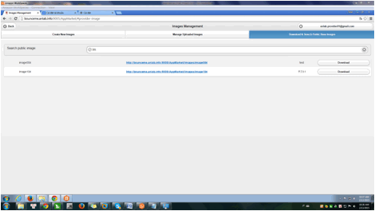Input "base" string to search docker images. These docker images are public.
List of base images will be displayed. Provider can't see private docker images.
Click [Dowload] button to download the base docker image.
After dowloading base image, provider will install application in Docker Image. Those applications must be complier for K-computer.
Example: service Copy, service Sleep, Service Sum.
Open Images Management Screen by click [Image Management] button on Provider’s Home screen.
Select [Creat New Images] tab to upload Docker image.
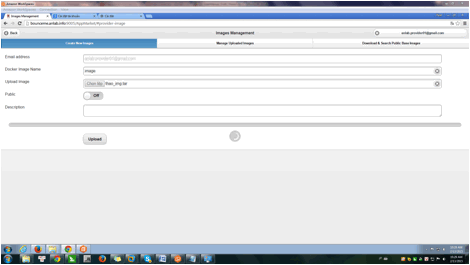User can upload many docker images from own PC.
Email address and System User Name display name which be registed. So, they can’t edit.
Input [Docker image Name] textbox and description for new docker image.
Click [Browser] button to open folder have docker image which want to upload. Select one docker image.
Click [X] to delete link folder.
[Public] checkbox can check or uncheck. If it is checked, this docker image can be used by the another providers .If it is unchecked, it will be private and the another providers won't see it.
After input all information, click [Upload] button to upload docker image. Then progress bar will display.
Please waitting to finish upload.
Note: Docker image file size is hundreds of MegaBytes, so Provider may have to wait for a while for upload to finish.
Provider click [Manage Uploaded image] tab on Images Management screen.
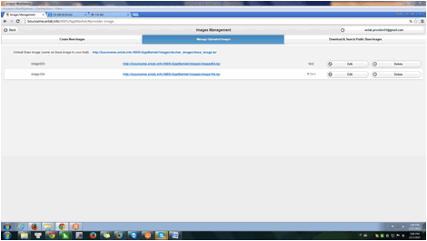Click [Edit] button to edit.
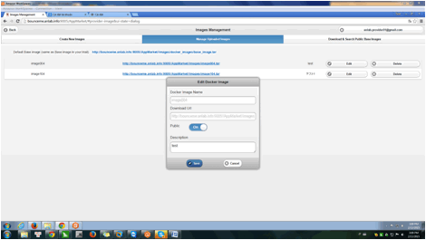Provider can’t edit Docker image name, download url.
Provider only can edit public and description.
After edit, click Save. Click cancel to don’t save information which provider edited.
Open [Manage Upload Images] tab on Image Management screen.
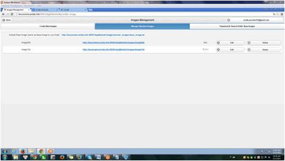Click [Delete] button to delete docker image corresponds. Then, all application used this docker image will be delete, too.
Open [New App] tab on Provider’s home screen.
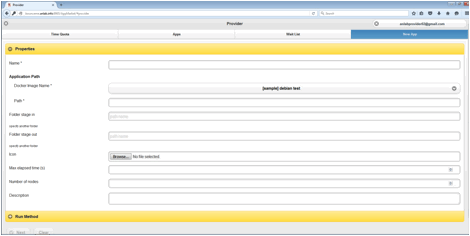[Properties] tab and [Run Method] tab.
Each service has only one run method.
In [Run Method] tab has also 2 sub-tabs: Parameters and Preview.
Run method of service has one or many parameter(s).
If user wants to increase number of parameters, user can use [Add] button.
When add new parameter, popup create new parameter is displayed as below figure.
User can input and set information and value for new parameter.
After click/tap [Done] button, new parameter is saved for service.
Provider can edit or delete parameter that be created by using [Edit] or [Delete] button.
To complete creating service, after inputted and set all necessary information, user can click [Next] button to move to Confirm after create service Screen.
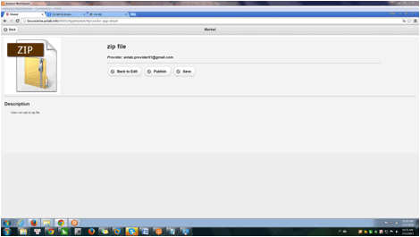Then, click/tap [Save] button to save information that is setted; or click/tap [Publish] button to not only save information but also public service.
If click/tap [Save] button, application is displayed with status is private.
If click/tap [Publish] button, application is displayed with status is public.
Click/Tap on [Back to Edit] button to back to [New App] tab to edit information which is inputted before.
Example for Service Copy
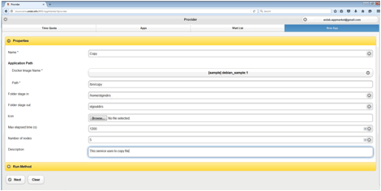
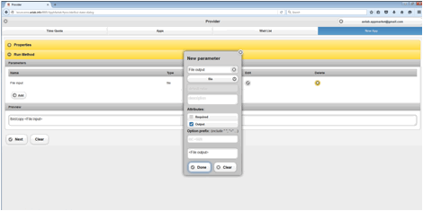
Open App Tab on Provider screen. Then, click to select one app item. Service’s detail display. Provider click [Back to edit] button to open detail includes User Tab, Wait List Tab and Detail Tab.
Select Detail Tab to edit information.
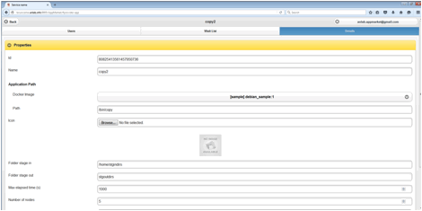Provider can edit all items except id item.
After provider edit, click Next to Save.
Open [App] tab on Provider’s home screen, select on Application:
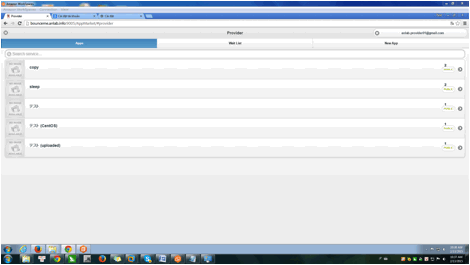 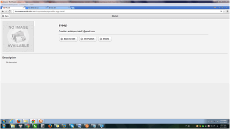Click [Delete] button to delete application.
On Provider’s home screen, click [Remove register] button .All images of provider also will be deleted
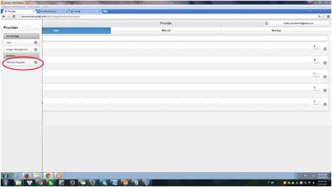After Provider click/tap on 1 entry of Service on [Apps] tab of Manage Screen for Logged in Provider, [Users] tab of Status Screen of Given Service is displayed as below figure.
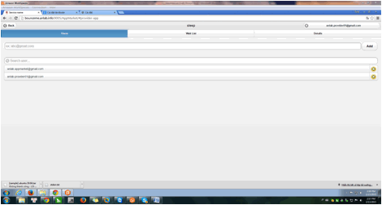System supplies a filter Users box for Provider's Searching user.
List of all Users that using that Service is displayed corresponded with number of notification on [Apps] tab of Manage Screen for Logged in Provider
Provider can remove any Users when not want to permit that User use own Service by clicking/tapping on Remove icon on right side as above figure.
Provider can add user directly for own service by inputting mail address of user, then click/tap on [Add] button.
Files from K-portal application must be copied to K computer compute nodes and back in two staging steps.
Step 1. is defined in application properties on K-portal using "Folder stage in" and "Folder stage out" parameters.
"Folder stage in" folder will be copied to K login node keeping only the last directory name in the path. For example, if you set "Folder stage in" to something like /myapp/dir1/dir2/, this directory will be copied to K login node with the name "dir2".
In job script template file placeholder [STAGE_IN_DIR] will be replaced with the same last directory name in the path from "Folder stage in".
"Folder stage out" folder will be copied from K login node into K-portal. In job script template file it will replace [STAGE_OUT_DIR].
Step 2. staging is defined using job script. Set files and folders for staging in and out in job script template file. Use [STAGE_IN_DIR] and [STAGE_OUT_DIR] placeholders mentioned above. Consult K computer job management system "Parallelnavi" for staging details.
To be able to view finished job files in Safari browser on OS X (MAC OS) and iOS disable blocking pop-up windows setting. On OS X: Safari preferences / Security / Block pop-up windows. On iOS: Settings / Safari / Block Pop-ups.